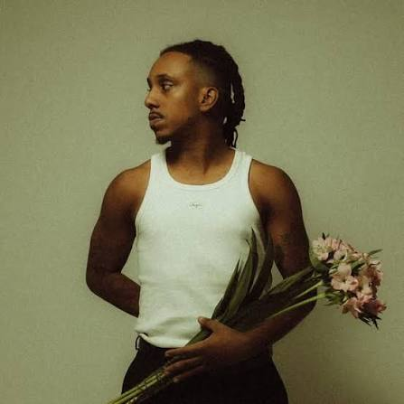

Esse Top 10 é um pouco especial para mim.
Eu vou falar um pouco sobre as músicas de artistas que conheci esse ano e que me ajudaram muito durante esse tempo.

Sotam é um cantor paulistano pioneiro do "smooth funk", estilo que une a batida do funk ao R&B e à MPB, destacando-se por suas rimas marcantes e músicas românticas.
Laufey é uma jovem cantora islandesa-chinesa que popularizou o jazz e a bossa nova entre a Geração Z, misturando ritmos clássicos com letras românticas do pop moderno.